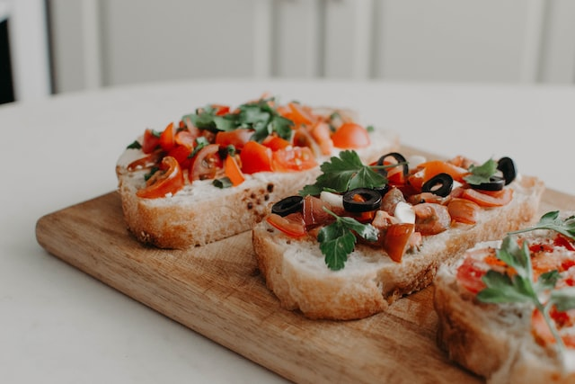

Bruschetta

Simple Bruschetta recipe
Bruschetta is an italian anitipasto dish, best served with some grilled bread.
Ingredients
- 10 tomatoes
- 1 onion
- 4 cloves of garlic
- 3 tablespoons of olive oil
- grated Parmesan cheese
- basil
- salt and pepper
- bread, Ciabatta for example
Steps
- cut the tomatoes, onions, garlic and basil
- mix everything together with the Parmesan, oil and spices
- leave it to draw for up to a day
- serve it with some freshly baked or grilled bread